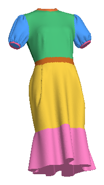
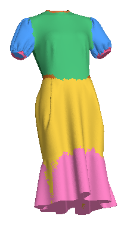
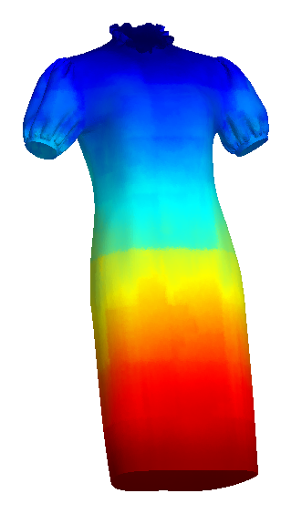
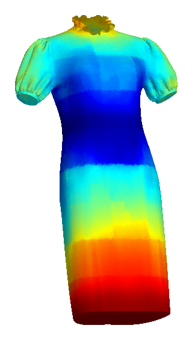
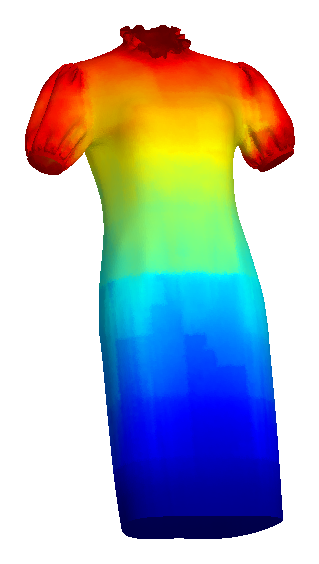
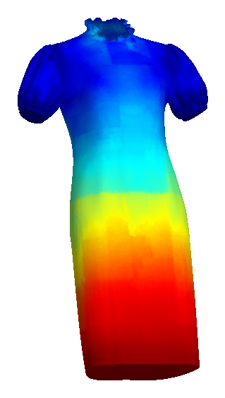
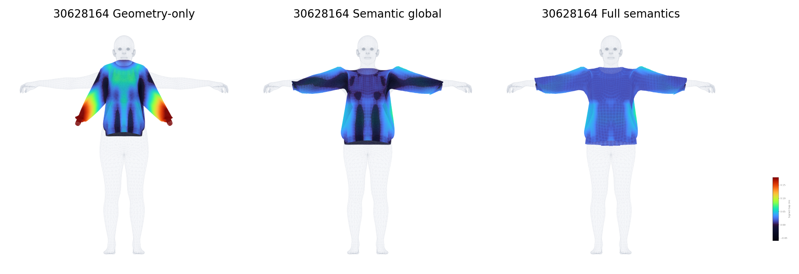

Overview
We study fine-grained 3D garment part understanding on assembled garment meshes. Unlike garment-category segmentation, our task assigns functional labels within each garment and augments discrete semantics with continuous topology-aware structural fields for anatomy-aware virtual try-on.
Functional part semantics
A unified 12-class vertex-level label space captures collar, waist, hem, cuff, sleeve, front/back regions, pockets, ruffles, and hats.
Topology-aware structure
Four continuous fields encode mesh-geodesic position relative to neckline, waistline, hemline, and cuff anchors.
Try-on alignment
Semantics restrict anatomical support, while structural fields refine within-region correspondence and reduce penetration.
Fine-Grained Garment Part Segmentation
The task reasons about parts within an individual garment, rather than predicting only the garment category or original sewing-panel identity.


Topology-Aware Structural Fields
Discrete labels answer what part?; structural fields answer where within the garment structure? Distances follow mesh connectivity, remaining meaningful when folds bring unrelated surface regions close in Euclidean space.




Garment-to-Body Alignment
Predicted part semantics constrain anatomically valid correspondences, and predicted structural fields refine within-region placement.

Alignment evaluation uses controlled region-specific subsets of the held-out test set. See the evaluation protocol for aggregation details.
Supplementary Material
Additional segmentation results, structural-field visualizations, simulation rollouts, annotation examples, and evaluation details are available in the repository. The full training and alignment code is not released at this stage.